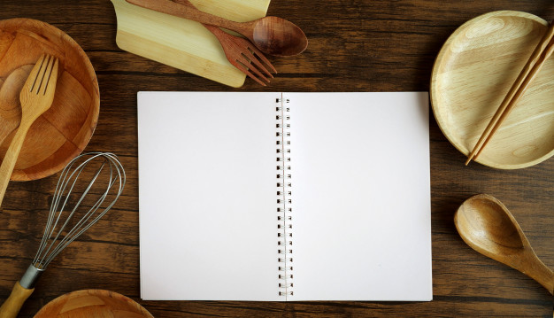

Mardi
Aujourd'hui on vous propose de vous régaler avec un taboulé pour un plein de vitamine, des madeleines pour faire chaud au coeur et pour finir une bonne soupe bien chaude pour en ce temps d'hiver.
Plat: Taboulé d'hiver

Ingrédient
- 100g de boulghour
- 1 oeuf
- 1/2 avocat
- 3 champignons
- 1/2 oignon rouge
- Citron
- Sel
- Poivre
| Nombre de persone : |
| 1 |
| Temps de préparation : |
| 20 et 1 heure au froid |
Taboulé d'hiver
- Hachez l'oignon,couper et émincer les champignons, couper l'avocat en fine lamelle
- Faite revenir les oignons et les champignon dans une poele à feu doux
- Pendant ce temps faite bouillir l'eau puis laisser cuire votre boulghour
- Retirer le boughour, puis mélanger avec les oignons et l'avocat. Laissez refroidir une heure
- Juste avant de déguster faite bouillir de l'eau et mettez votre oeuf pendant 6 minutes, pas une de plus.
- Pressez votre citron salée poivrée.
- Il ne vous reste plus cas mémanger le tout et régalez vous!
Gouter: Madeleinesde grand-mère
Ingrédient
- 100g de beurre
- 2 oeufs
- 100g de sucre
- 200g de farine
- 1 cuil. à café de levure
| Nombre de persone : |
| 20 madeleines |
| Temps de préparation : |
| 20 min de préparation et 10 min de cuisson |
Madeleines
- Préchauffer le four à 200 degré
- Battre les oeufs avec le sucre pendant 5 minutes.
- Faire fondre le beurre au micro-onde
- Tamiser la farine puis l'ajouter avec la levure
- Bien mélanger jusqu'à l'obtention d'une pates bien lisse.
- Ajouter le beurre et bien mélanger
- Beurrer les moules puis les remplir à 2 tiers.
- Enfourner pendant 5 minutes à 200 degré puis 10 minutes à 150
- Retirer du four, démouler vos madeleines encore chaude. Attendre quelques minutes puis régaler vous!
Repas : Soupe poireaux pomme de terre
Ingrédient
- 1 poireau
- 2 pommes de terre
- 20cl de bouillon de légume
| Nombre de persone : |
| 2 |
| Temps de préparation : |
| 10 min de préparation et 20 min de cuisson |
Soupe poireaux pommes de terre
- Eplucher les pommes de terre et le poireau
- Couper en petit morceau les pommes de terre
- Faire bouillir le bouillon
- Faire cuire les légumes dans le bouillons pendant 20 minutes
- Pour ajouter un peu de plaisir, vous pouvez également faire des croutons avec du pain rassis.
- Couper le pain en petit bouts metter de l'huilee d'olive salée poivrée et au four le temps de faire cuire la soupe.
- C'est prêt, vous pouvez mixer ou non votre soupe.
Voici nos recettes du jour j'espère que cela vous aura plus et que vous bous êtes bien régalé!